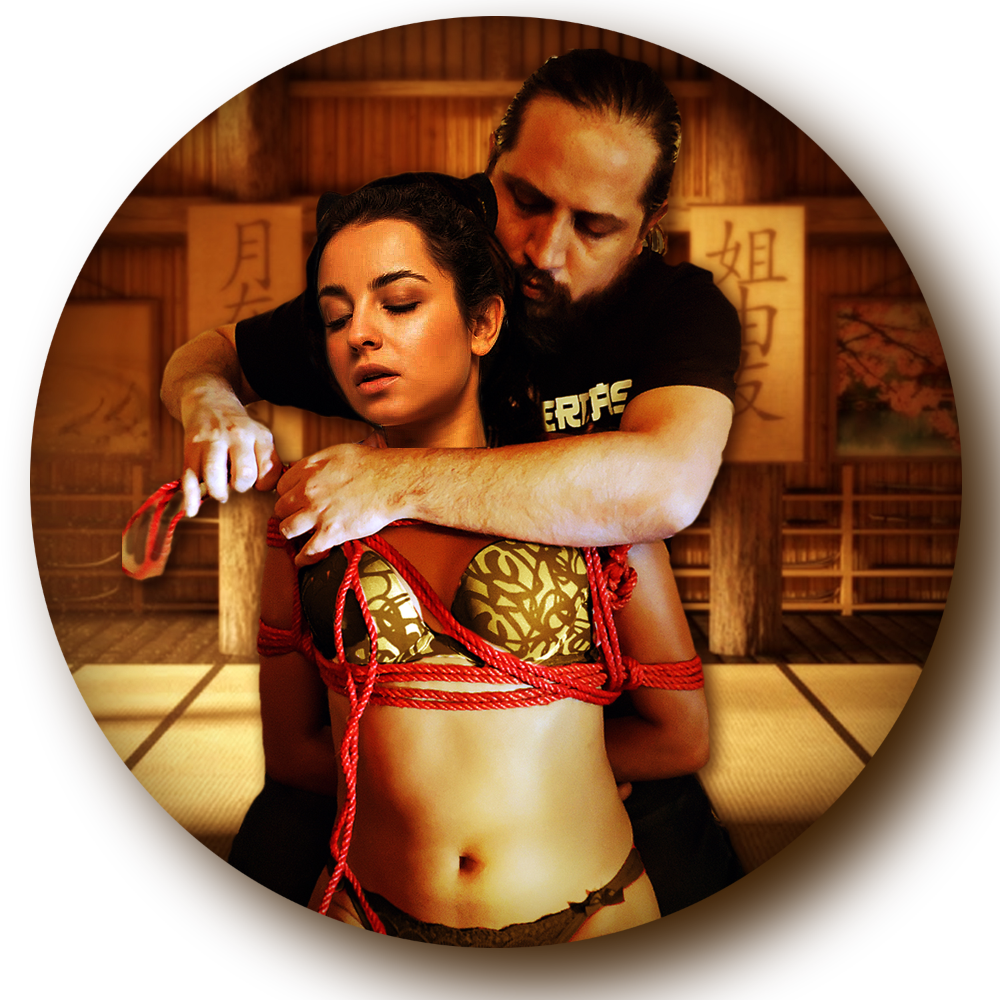
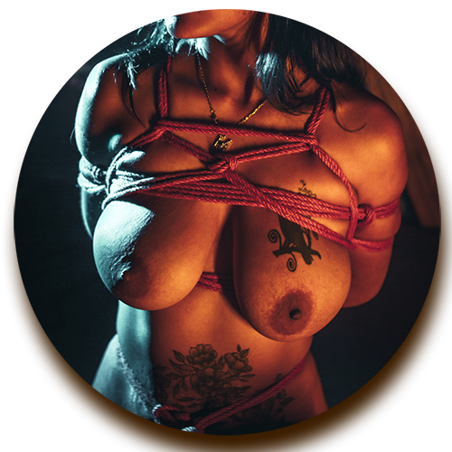
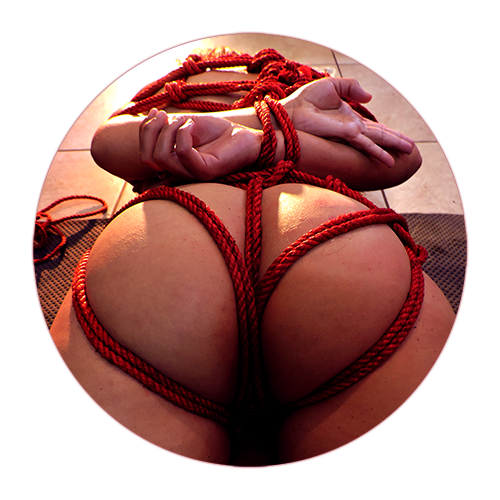
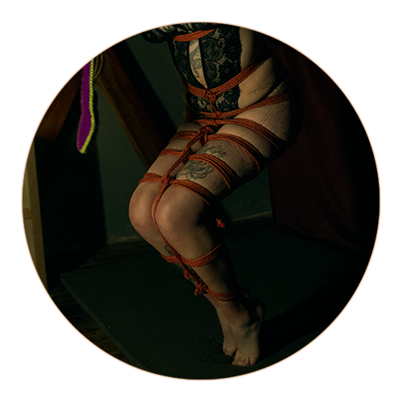

¿Por qué atar a mi pareja?

La pregunta no es por qué deberías hacerlo, sino si realmente estás hecho para ello. El Shibari no es una práctica universal ni una experiencia diseñada para el consumo general. Es una disciplina que solo resulta significativa para una porción reducida de personas que encuentran valor en el control, la restricción y la interacción estructurada entre cuerpos.

No es para todos
A diferencia de otras formas de intimidad más accesibles o inmediatas, el Shibari exige tiempo, paciencia y una disposición particular. No todas las personas disfrutan la sensación de limitar el movimiento, ni todas encuentran placer en sostener el control o cederlo de manera consciente.
Intentar forzar esta práctica en dinámicas donde no existe afinidad natural suele llevar a incomodidad, frustración o experiencias superficiales. Por eso, más que una actividad, el Shibari funciona como un filtro.

Dominación y sumisión como base
La práctica requiere la conjunción de dos perfiles compatibles: una personalidad dominante que encuentre satisfacción en ejercer control de manera consciente, y una contraparte sumisa que pueda habitar la restricción sin resistencia interna.
Esta dinámica no se improvisa ni se construye desde la obligación. Surge de inclinaciones previas que, al ser canalizadas correctamente, permiten que la interacción tenga coherencia, intensidad y sentido.
Una experiencia que se construye
El valor del Shibari no está únicamente en la inmovilización final, sino en el proceso. Cada cuerda, cada ajuste y cada pausa forman parte de una interacción prolongada donde el control se desarrolla de forma progresiva.
Esto lo diferencia de otras prácticas más inmediatas: aquí, la experiencia no se consume rápido, se construye.

Claridad antes que idealización
En los últimos años, el Shibari ha sido presentado de forma simplificada o estética para hacerlo más accesible. Sin embargo, reducirlo a una experiencia visual o decorativa elimina los elementos que le dan profundidad.
Entender su naturaleza implica aceptar que no es una práctica neutral ni universal. Es una forma específica de interacción que requiere intención, responsabilidad y una afinidad real entre quienes participan.